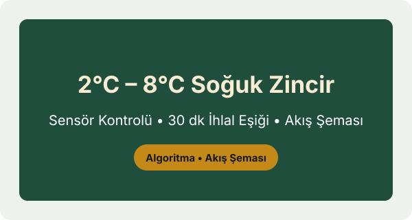

Algoritmik düşünme ve Python uygulamalarım ile ilaç–besin ve ilaç–ilaç etkileşimleri
eksenindeki inceleme kartlarını aşağıda görebilirsin.

Algoritma & Akış Şeması
Soğuk Zincir İlaç Dolabı Sıcaklık Takibi
2°C–8°C aralığındaki soğuk zincir kayıtlarını inceleyen; sensör hatalarını,
anlık sapmaları ve 30 dakika üzeri kritik ihlalleri ayıran sözde kod ve akış
şeması çalışması.
Ne öğrendim? Süre eşiklerini ve sensör hatası ayrımını net kurallara bağlamanın hatalı uyarıları önlediğini öğrendim.
Eczane İlaç Stok ve Son Kullanma Tarihi Takip Sistemi
İlaç adı, stok adedi, minimum stok sınırı ve son kullanma tarihini doğrulayan;
stok ve tarih durumlarını sınıflandırıp CSV raporu üreten Python uygulaması.
Ne öğrendim? Girdi doğrulama, otomatik testler ve veri dışa aktarımında ayırıcı uyumunun güvenilirlik açısından kritik olduğunu gördüm.
Greyfurt tüketiminin bazı ilaçların metabolizma ve emilim mekanizmalarında
yol açabileceği değişimlere dikkat çeken ve hasta bilgilendirmesini
sadeleştiren örnek inceleme kartı.
Ne öğrendim? Besin–ilaç etkileşimlerinde genel uyarıları sade ve anlaşılır ifadelerle sunmanın hastanın kafasını karıştırmadan farkındalık sağladığını öğrendim.
Nonsteroid antiinflamatuvar ilaçlar (NSAİİ) ile kan sulandırıcıların birlikte
kullanımında artabilecek kanama riskine ve kaynak doğrulama gerekliliğine
odaklanan örnek değerlendirme kartı.
Ne öğrendim? Yüksek riskli ilaç birlikteliklerinde kural tabanlı hatırlatıcıların ve kaynak kontrolünün klinik güvenliği desteklediğini kavradım.